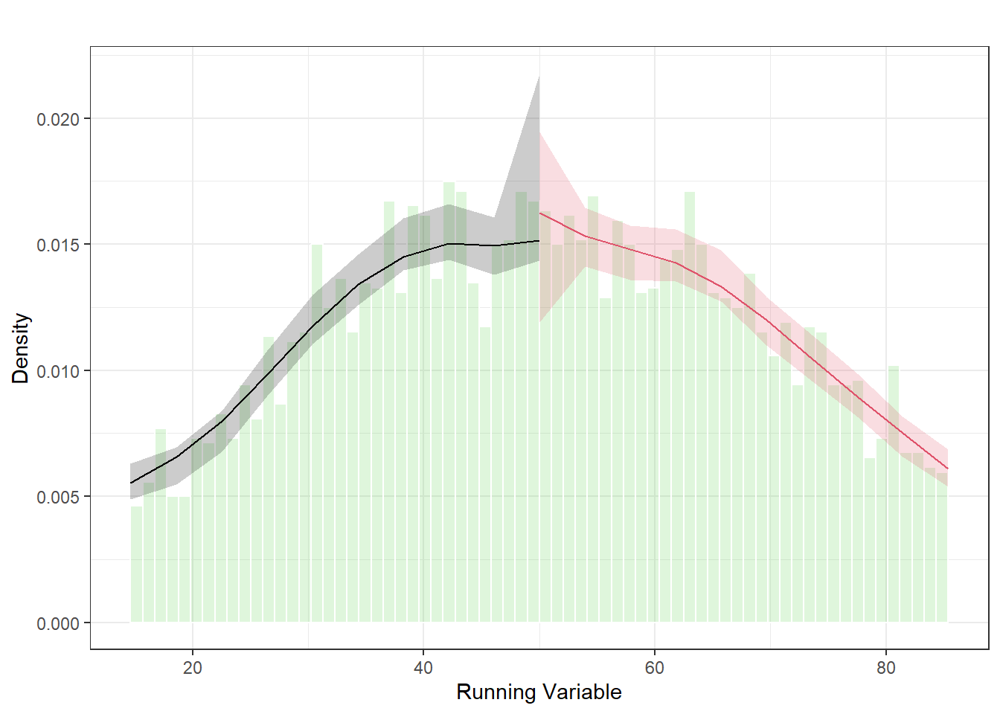

This appendix walks through a simple sharp regression discontinuity design (RDD) using simulated data.
The running variable is x with a cutoff at 50, treatment is assigned deterministically (D = 1[x ≥ 50]), and the outcome y has a true jump at the cutoff.
We follow a basic RDD workflow: 1) simulate data,
2) pick a bandwidth,
3) estimate the discontinuity (with and without covariates),
4) run a few standard checks (density/manipulation; covariate balance),
5) do a quick bandwidth sensitivity check, and
6) run konfound on the main estimate.
A2.1 Setup
Code
set.seed(5)# General data and plottinglibrary(tidyverse)# RDD estimationlibrary(rdrobust)library(rddensity) # Cattaneo et al. density test + plot# Sensitivity analysislibrary(konfound)# Custom plotting helper used later (expects file to be in the working directory)source("rdplot_function.R")
A2.2 Simulate a sharp RD dataset
A few small implementation choices here are just to keep things tidy:
We cap the running variable to [0, 100] to avoid extreme tails.
Covariates are generated independently of treatment assignment (so balance should hold around the cutoff).
Code
n <-5000cutoff <-50true_tau <-40# true local treatment effect (jump at the cutoff)dat <-tibble(x =rnorm(n, 50, 25)) %>%mutate(x =if_else(x <0, 0, x),x =if_else(x >100, 100, x),D =if_else(x >= cutoff, 1, 0), # sharp assignmentses =rnorm(n(), 0, 1),female =rbinom(n(), 1, 0.5),sci_interest =rnorm(n(), 0, 1) ) %>%mutate(y =25+ true_tau * D +# discontinuity1.5* x +# smooth relationship with x5* ses +3* female +4* sci_interest +rnorm(n(), 0, 20) )glimpse(dat)
Sharp RD estimates using local polynomial regression.
Number of Obs. 5000
BW type Manual
Kernel Triangular
VCE method NN
Number of Obs. 2463 2537
Eff. Number of Obs. 914 874
Order est. (p) 1 1
Order bias (q) 2 2
BW est. (h) 11.791 11.791
BW bias (b) 11.791 11.791
rho (h/b) 1.000 1.000
Unique Obs. 2463 2537
=====================================================================
Point Robust Inference
Estimate z P>|z| [ 95% C.I. ]
---------------------------------------------------------------------
RD Effect 38.943 11.011 0.000 [29.240 , 41.903]
=====================================================================
Covariate-adjusted Sharp RD estimates using local polynomial regression.
Number of Obs. 5000
BW type Manual
Kernel Triangular
VCE method NN
Number of Obs. 2463 2537
Eff. Number of Obs. 914 874
Order est. (p) 1 1
Order bias (q) 2 2
BW est. (h) 11.791 11.791
BW bias (b) 11.791 11.791
rho (h/b) 1.000 1.000
Unique Obs. 2463 2537
=====================================================================
Point Robust Inference
Estimate z P>|z| [ 95% C.I. ]
---------------------------------------------------------------------
RD Effect 38.477 11.144 0.000 [28.874 , 41.199]
=====================================================================
A2.6 Manipulation / density checks around the cutoff
A common RDD worry is that people can “sort” around the cutoff (i.e., manipulate the running variable).
Density discontinuity tests are one way to flag that kind of problem.
Cattaneo et al. density test (rddensity)
Code
dens <-rddensity(X = dat$x,c = cutoff,h = main_bw,vce ="jackknife",massPoints =FALSE)summary(dens)
Manipulation testing using local polynomial density estimation.
Number of obs = 5000
Model = unrestricted
Kernel = triangular
BW method = mannual
VCE method = jackknife
c = 50 Left of c Right of c
Number of obs 2463 2537
Eff. Number of obs 914 874
Order est. (p) 2 2
Order bias (q) 3 3
BW est. (h) 11.791 11.791
Method T P > |T|
Robust -0.8667 0.3861
P-values of binomial tests (H0: p=0.5).
Window Length / 2 <c >=c P>|T|
0.291 31 20 0.1608
0.582 53 49 0.7666
0.873 77 74 0.8708
1.164 99 95 0.8295
1.455 120 113 0.6944
1.747 150 128 0.2078
2.038 172 157 0.4403
2.329 194 183 0.6066
2.620 216 208 0.7339
2.911 239 229 0.6774
Density plot around the cutoff using rdplotdensity().
$Estl
Call: lpdensity
Sample size 2463
Polynomial order for point estimation (p=) 2
Order of derivative estimated (v=) 1
Polynomial order for confidence interval (q=) 3
Kernel function triangular
Scaling factor 0.492698539707942
Bandwidth method user provided
Use summary(...) to show estimates.
$Estr
Call: lpdensity
Sample size 2537
Polynomial order for point estimation (p=) 2
Order of derivative estimated (v=) 1
Polynomial order for confidence interval (q=) 3
Kernel function triangular
Scaling factor 0.50750150030006
Bandwidth method user provided
Use summary(...) to show estimates.
$Estplot

Density plot around the cutoff using rdplotdensity().
A2.7 Covariate balance near the cutoff
If RDD is behaving as expected, covariates should be smooth at the cutoff.
This isn’t a formal proof, but obvious jumps in pre-treatment covariates are a red flag.
Sharp RD estimates using local polynomial regression.
Number of Obs. 5000
BW type Manual
Kernel Triangular
VCE method NN
Number of Obs. 2463 2537
Eff. Number of Obs. 638 638
Order est. (p) 1 1
Order bias (q) 2 2
BW est. (h) 8.254 8.254
BW bias (b) 8.254 8.254
rho (h/b) 1.000 1.000
Unique Obs. 2463 2537
=====================================================================
Point Robust Inference
Estimate z P>|z| [ 95% C.I. ]
---------------------------------------------------------------------
RD Effect 37.346 8.837 0.000 [26.924 , 42.270]
=====================================================================
Sharp RD estimates using local polynomial regression.
Number of Obs. 5000
BW type Manual
Kernel Triangular
VCE method NN
Number of Obs. 2463 2537
Eff. Number of Obs. 1160 1144
Order est. (p) 1 1
Order bias (q) 2 2
BW est. (h) 15.329 15.329
BW bias (b) 15.329 15.329
rho (h/b) 1.000 1.000
Unique Obs. 2463 2537
=====================================================================
Point Robust Inference
Estimate z P>|z| [ 95% C.I. ]
---------------------------------------------------------------------
RD Effect 39.861 13.117 0.000 [31.372 , 42.395]
=====================================================================
A2.9 Sensitivity analysis (Konfound)
Here we run konfound on the estimate/SE you provided.
If you want this to be fully automatic, we can extract the estimate and SE from rd_main_simple instead of hard-coding them.
Impact Threshold for a Confounding Variable (ITCV):
The minimum impact of an omitted variable to nullify an inference for
a null hypothesis of an effect of 0 (nu) is based on a correlation of 0.197
with the outcome and 0.197 with the predictor of interest (conditioning on all
observed covariates in the model; signs are interchangeable if they are different).
This is based on a threshold effect of 0.046 for statistical significance (alpha = 0.05).
Correspondingly the conditional impact of an omitted variable (as defined in Frank 2000) must be
0.197 X 0.197 = 0.039 to nullify an inference for a null hypothesis of an effect of 0 (nu).
For calculation of unconditional ITCV using pkonfound(), additionally include
the R2, sdx, and sdy as input.
See Frank (2000) for a description of the method.
Citation:
Frank, K. (2000). Impact of a confounding variable on the inference of a
regression coefficient. Sociological Methods and Research, 29 (2), 147-194
Accuracy of results increases with the number of decimals reported.
The ITCV analysis was originally derived for OLS standard errors. If the
standard errors reported in the table were not based on OLS, some caution
should be used to interpret the ITCV.
Robustness of Inference to Replacement (RIR):
RIR = 796
To nullify the inference of an effect using the threshold of 21.596 for
statistical significance (with null hypothesis = 0 and alpha = 0.05), 44.545%
of the estimate of 38.943 would have to be due to bias. This implies that to
nullify the inference one would expect to have to replace 796 (44.545%)
observations with data points for which the effect is 0 (RIR = 796).
See Frank et al. (2013) for a description of the method.
Citation: Frank, K.A., Maroulis, S., Duong, M., and Kelcey, B. (2013).
What would it take to change an inference?
Using Rubin's causal model to interpret the robustness of causal inferences.
Education, Evaluation and Policy Analysis, 35 437-460.
Accuracy of results increases with the number of decimals reported.
Source Code
---title: "Appendix A2. Regression Discontinuity (Sharp RD) Example"format: html: toc: true toc-depth: 3 code-fold: true code-tools: true number-sections: falseexecute: warning: false message: false cache: true freeze: auto---## OverviewThis appendix walks through a simple *sharp* regression discontinuity design (RDD) using simulated data.\The running variable is `x` with a cutoff at `50`, treatment is assigned deterministically (`D = 1[x ≥ 50]`), and the outcome `y` has a true jump at the cutoff.We follow a basic RDD workflow: 1) simulate data,\2) pick a bandwidth,\3) estimate the discontinuity (with and without covariates),\4) run a few standard checks (density/manipulation; covariate balance),\5) do a quick bandwidth sensitivity check, and\6) run [konfound](https://cran.r-project.org/web/packages/konfound/index.html) on the main estimate.## A2.1 Setup```{r}#| label: a2-setup#| include: trueset.seed(5)# General data and plottinglibrary(tidyverse)# RDD estimationlibrary(rdrobust)library(rddensity) # Cattaneo et al. density test + plot# Sensitivity analysislibrary(konfound)# Custom plotting helper used later (expects file to be in the working directory)source("rdplot_function.R")```## A2.2 Simulate a sharp RD datasetA few small implementation choices here are just to keep things tidy:- We cap the running variable to `[0, 100]` to avoid extreme tails.- Covariates are generated *independently* of treatment assignment (so balance should hold around the cutoff).```{r}#| label: a2-simulate-data#| include: truen <-5000cutoff <-50true_tau <-40# true local treatment effect (jump at the cutoff)dat <-tibble(x =rnorm(n, 50, 25)) %>%mutate(x =if_else(x <0, 0, x),x =if_else(x >100, 100, x),D =if_else(x >= cutoff, 1, 0), # sharp assignmentses =rnorm(n(), 0, 1),female =rbinom(n(), 1, 0.5),sci_interest =rnorm(n(), 0, 1) ) %>%mutate(y =25+ true_tau * D +# discontinuity1.5* x +# smooth relationship with x5* ses +3* female +4* sci_interest +rnorm(n(), 0, 20) )glimpse(dat)```## A2.3 Quick plot (does the jump look plausible?)This is not “proof” of anything, but it’s a good first check.If the plot looks flat or noisy right at the cutoff, it’s worth slowing down before trusting estimates.```{r}#| label: a2-plot-raw#| fig-cap: "Raw scatter plot with a vertical line at the cutoff (50)."#| include: trueggplot(dat, aes(x, y, colour =factor(D))) +geom_point(alpha =0.3) +geom_vline(xintercept = cutoff, colour ="grey40", linetype =2) +stat_smooth(method ="lm", se =FALSE) +labs(x ="Running variable (X)",y ="Outcome (Y)",colour ="Treatment (D)" )```## A2.4 Bandwidth selection (triangular kernel)Here we use `rdbwselect()` and take the main MSE-optimal bandwidth.This bandwidth is the default starting point for the main estimate.```{r}#| label: a2-bandwidth#| include: truebw_tri <-rdbwselect(y = dat$y,x = dat$x,c = cutoff,kernel ="triangular")# Main MSE-optimal bandwidth (first row/column in the bws matrix)main_bw <- bw_tri$bws[1, 1]main_bw```## A2.5 Main RD estimate (with and without covariates)Two versions:- **Simple RD:** outcome on running variable only.- **Covariate-adjusted RD:** adds covariates as precision controls (should not change identification in sharp RD).```{r}#| label: a2-rd-main-simple#| include: truerd_main_simple <-rdrobust(y = dat$y,x = dat$x,c = cutoff,h = main_bw,kernel ="triangular")summary(rd_main_simple)``````{r}#| label: a2-rd-main-cov#| include: truerd_main_cov <-rdrobust(y = dat$y,x = dat$x,c = cutoff,h = main_bw,kernel ="triangular",covs =cbind(dat$ses, dat$female, dat$sci_interest))summary(rd_main_cov)```## A2.6 Manipulation / density checks around the cutoffA common RDD worry is that people can “sort” around the cutoff (i.e., manipulate the running variable).Density discontinuity tests are one way to flag that kind of problem.- Cattaneo et al. density test (rddensity)```{r}#| label: a2-rddensity#| include: truedens <-rddensity(X = dat$x,c = cutoff,h = main_bw,vce ="jackknife",massPoints =FALSE)summary(dens)``````{r}#| label: a2-rdplotdensity#| fig-cap: "Density plot around the cutoff using rdplotdensity()."#| include: truerdplotdensity( dens, dat$x,xlabel ="Running Variable",ylabel ="Density")```## A2.7 Covariate balance near the cutoffIf RDD is behaving as expected, covariates should be smooth at the cutoff.This isn’t a formal proof, but obvious jumps in pre-treatment covariates are a red flag.```{r}#| label: a2-center-running-var#| include: truedat1 <- dat %>%mutate(x_centered = x - cutoff)``````{r}#| label: a2-cov-balance-female#| fig-cap: "Covariate balance check at the cutoff: female."#| include: trueplot.RD( female ~ x_centered,treat ="D",data = dat1,yaxt ="n",linecol ="black",kdens ="rectangular",h = main_bw,cex =0.5,main ="Covariate Balance Check: female",ylab ="female",xlab ="Running Variable (Centered)",xlim =c(-50, 50))axis(side =2, at =c(0, 1), labels =c(0, 1))``````{r}#| label: a2-cov-balance-ses#| fig-cap: "Covariate balance check at the cutoff: SES."#| include: trueplot.RD( ses ~ x_centered,treat ="D",data = dat1,linecol ="black",kdens ="rectangular",h = main_bw,cex =0.5,main ="Covariate Balance Check: SES",ylab ="Socioeconomic Status (SES)",xlab ="Running Variable (Centered)",xlim =c(-50, 50))``````{r}#| label: a2-cov-balance-interest#| fig-cap: "Covariate balance check at the cutoff: science interest."#| include: trueplot.RD( sci_interest ~ x_centered,treat ="D",data = dat1,linecol ="black",kdens ="rectangular",h = main_bw,cex =0.5,main ="Covariate Balance Check: science interest",ylab ="science interest",xlab ="Running Variable (Centered)",xlim =c(-50, 50))```## A2.8 Bandwidth sensitivity (narrower vs wider)This is a quick “does the estimate flip if I nudge bandwidth?” check.It’s not the only robustness check, but it’s an easy one that reviewers often expect.```{r}#| label: a2-bandwidth-sensitivity#| include: truebw_narrow <- main_bw *0.7bw_wide <- main_bw *1.3bw_narrowbw_wide``````{r}#| label: a2-rd-narrow#| include: truerd_narrow <-rdrobust(y = dat$y,x = dat$x,c = cutoff,h = bw_narrow,kernel ="triangular")summary(rd_narrow)``````{r}#| label: a2-rd-wide#| include: truerd_wide <-rdrobust(y = dat$y,x = dat$x,c = cutoff,h = bw_wide,kernel ="triangular")summary(rd_wide)```## A2.9 Sensitivity analysis (Konfound)Here we run `konfound` on the estimate/SE you provided.If you want this to be fully automatic, we can extract the estimate and SE from `rd_main_simple` instead of hard-coding them.```{r}#| label: a2-konfound#| include: truepkonfound(est_eff =38.943,std_err =11.011,n_obs =1788,n_covariates =1,index ="IT")pkonfound(est_eff =38.943,std_err =11.011,n_obs =1788,n_covariates =1,index ="RIR")```